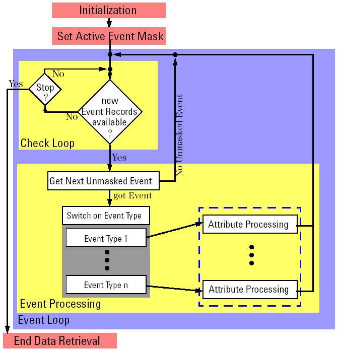

Recommended implementation structure
When implementing your own data retrieval function, you should follow the recommended structure explained here. The figure below shows the complete structure. The individual elements of the diagram are explained below.

Initialization
The data retrieval process is initialized by calling DRLStart with parameter settings according to your needs.
Set active event mask
In order to unmask events that you want to retrieve, and to mask those events which you do not want, an event mask has to be set with the appropriate values. By calling DRLSetEventMask, you set the active event mask as specified in that call.
Event loop
The event loop is the main part of the data retrieval function. It contains the check loop and the event processing.
Check loop
The check loop continuously scans the data log stream for new event records by repeatedly calling DRLEventAvailable. If a new event record is available, the loop is left and the event processing begins. The check loop can also contain a query for terminating the data retrieval function.
Event processing
The first step of the event processing is calling DRLGetNextUnmaskedEvent. If the event record of an unmasked event was found, the event type can be determined with DRLEventGetType. Once known, the event type lets you call a specific function that processes the attributes of an event of that type. For details, see Event types.
Attribute processing
By calling DRLEventGetAttribute for each attribute of the event, you read the attribute records from the event record body. The data of each attribute record is then processed according to your needs. For details, see Attribute types.
End data retrieval
The data retrieval process should be terminated by calling the DRLStop function.
Functional changes
- Introduced before SmarTest 6.3.2